1. Módulo de Red: DHCP y DNS
Bienvenido a la documentación técnica del módulo de red de nuestra infraestructura. Este apartado describe el despliegue, la configuración y la validación de los dos servicios que hacen posible la conectividad interna automática de la empresa: el servidor DHCP y el servidor DNS.
Ambos servicios se ejecutan sobre una misma máquina Ubuntu Server 24.04 LTS
que actúa como nodo central de la red RedEmpresa.
1.1. Resumen del Módulo
El objetivo de este módulo es garantizar que cualquier dispositivo conectado
a la red corporativa obtenga una configuración de red operativa sin
intervención manual, y que pueda acceder a los servicios internos
(www.empresa.local, nas.empresa.local, intranet.empresa.local)
utilizando nombres de dominio en lugar de direcciones IP.
1.1.1. Servicios desplegados en este módulo
- Servidor DHCP (ISC DHCP Server): asignación dinámica de direcciones IP y entrega automática de parámetros de red (gateway, DNS, dominio).
- Servidor DNS (BIND9): resolución directa e inversa del dominio
privado
empresa.local. - Integración DHCP ↔ DNS: configuración cruzada para que los clientes reciban por DHCP la dirección del DNS interno.
1.2. Datos Técnicos de Referencia
| Parámetro | Valor |
|---|---|
| Sistema operativo | Ubuntu Server 24.04.3 LTS |
| Dominio interno | empresa.local |
| Red interna | 192.168.10.0/24 |
| IP del servidor DHCP + DNS | 192.168.10.2 |
| LAN Segment (VMware) | RedEmpresa |
| Rango dinámico DHCP | 192.168.10.100 – 192.168.10.200 |
| Usuario administrador | admin-red (Alberto Belda) |
1.3. Arquitectura de la Red
La red interna está segmentada en tres tramos funcionales, respetando el principio de separación entre infraestructura, servicios y clientes:
| Rango | Uso |
|---|---|
192.168.10.1 |
Gateway / Router de salida |
192.168.10.2 |
Servidor DHCP + DNS (este módulo) |
192.168.10.10 |
Servidor Web (Samuel Puma) |
192.168.10.20 |
Servidor NAS (Jacob Vila) |
192.168.10.100 – .200 |
Rango dinámico asignado por DHCP a clientes |
192.168.10.201 – .254 |
Reservado para futuras ampliaciones |
1.3.1. Interfaces de red del servidor
La máquina dispone de dos tarjetas de red independientes:
ens33(modo NAT): acceso a Internet para la descarga de paquetes y actualizaciones del sistema.ens37(LAN SegmentRedEmpresa): red interna donde se ofrecen los servicios DHCP y DNS.
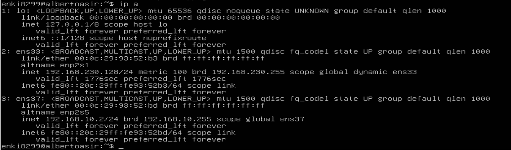
1.3.2. Configuración de IP fija con Netplan
Archivo /etc/netplan/50-cloud-init.yaml:
network:
version: 2
ethernets:
ens33:
dhcp4: true
ens37:
dhcp4: false
addresses:
- 192.168.10.2/24
Aplicación de los cambios:
sudo netplan apply
1.4. Despliegue del Servidor DHCP
1.4.1. Instalación
sudo apt update
sudo apt install isc-dhcp-server -y
1.4.2. Selección de la interfaz de escucha
En /etc/default/isc-dhcp-server se limita el servicio a la red interna
para evitar cualquier impacto sobre la red externa:
INTERFACESv4="ens37"
1.4.3. Configuración principal del DHCP
Archivo /etc/dhcp/dhcpd.conf:
# --- Configuración empresa.local (admin-red) ---
authoritative;
default-lease-time 600;
max-lease-time 7200;
option domain-name "empresa.local";
option domain-name-servers 192.168.10.2;
subnet 192.168.10.0 netmask 255.255.255.0 {
range 192.168.10.100 192.168.10.200;
option routers 192.168.10.1;
option broadcast-address 192.168.10.255;
}
Elementos destacados de la configuración:
authoritative: declara este servidor como el DHCP oficial del segmento.default-lease-time 600: los clientes renuevan su concesión cada 10 minutos.option domain-name-servers 192.168.10.2: entrega como DNS al propio servidor BIND9 local, habilitando la integración DHCP ↔ DNS.
1.4.4. Arranque y verificación del servicio
sudo systemctl restart isc-dhcp-server
sudo systemctl status isc-dhcp-server
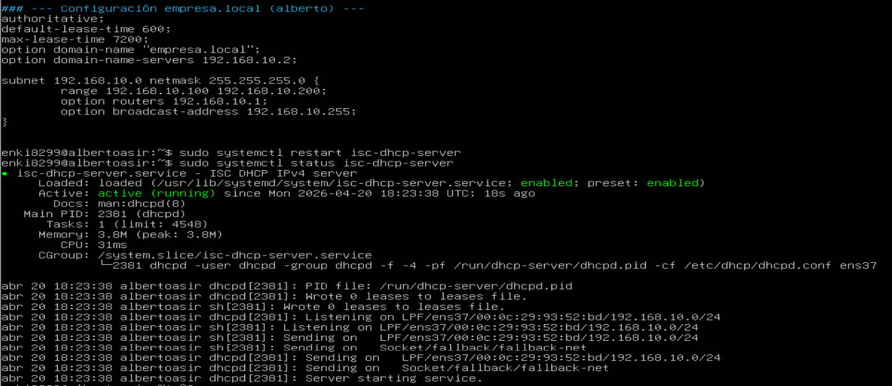
El servicio queda en estado active (running) y escuchando sobre la
interfaz correcta.
1.5. Validación del DHCP con cliente real
Para demostrar el funcionamiento end-to-end se ha desplegado una segunda
máquina virtual (Lubuntu) conectada al mismo LAN Segment RedEmpresa,
sin ninguna configuración IP manual.
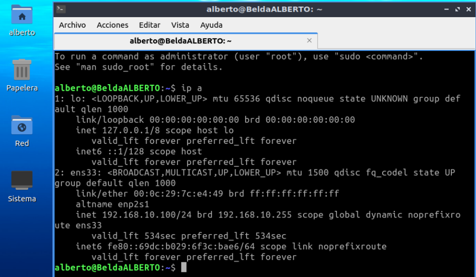
El cliente obtuvo automáticamente la IP 192.168.10.100 (la primera
disponible del rango configurado), confirmando el correcto funcionamiento
del servicio.
1.5.1. Trazabilidad mediante leases
El servidor mantiene un registro detallado de todas las concesiones
emitidas en el archivo /var/lib/dhcp/dhcpd.leases:
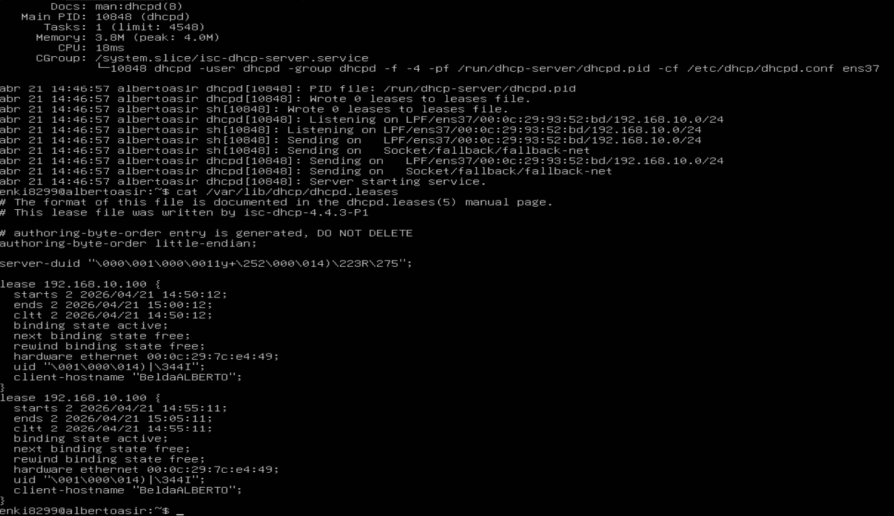
Se verifica la coincidencia exacta entre:
- La dirección MAC del cliente (
00:0c:29:7c:e4:49) en elip adel cliente y en el archivo de leases del servidor. - El hostname del cliente (
BeldaALBERTO). - El tiempo de concesión: 10 minutos, conforme al parámetro
default-lease-timeconfigurado.
Esta trazabilidad es fundamental para auditoría y resolución de incidencias en entornos reales.
1.6. Despliegue del Servidor DNS (BIND9)
1.6.1. Instalación
sudo apt install bind9 bind9utils bind9-doc dnsutils -y
| Paquete | Finalidad |
|---|---|
bind9 |
Servidor DNS propiamente dicho |
bind9utils |
Utilidades named-checkconf y named-checkzone |
bind9-doc |
Documentación local |
dnsutils |
Herramientas de diagnóstico dig y nslookup |
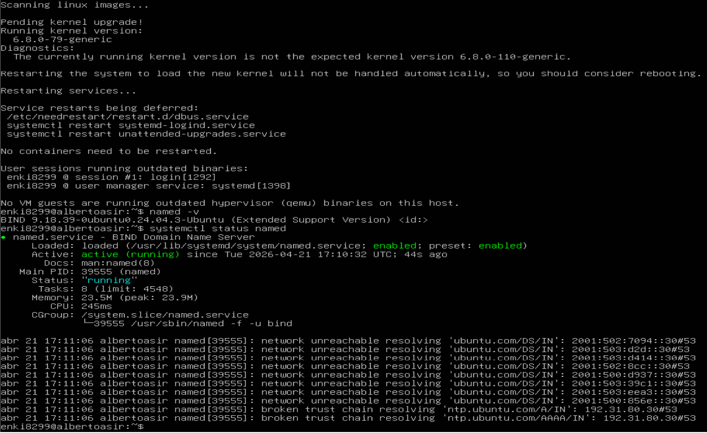
Versión desplegada: BIND 9.18.39 (incluida en Ubuntu 24.04 LTS).
1.6.2. Conceptos de registros DNS
| Registro | Función |
|---|---|
SOA |
"Start of Authority" — abre la zona y fija sus parámetros |
NS |
Designa el servidor autoritativo de la zona |
A |
Asocia un nombre a una dirección IPv4 |
CNAME |
Alias de otro nombre de dominio |
PTR |
Resolución inversa: IP → nombre (usado en la zona inversa) |
1.6.3. Declaración de zonas
Archivo /etc/bind/named.conf.local:
// Zona directa del dominio empresa.local
zone "empresa.local" {
type master;
file "/etc/bind/db.empresa.local";
};
// Zona inversa para la red 192.168.10.0/24
zone "10.168.192.in-addr.arpa" {
type master;
file "/etc/bind/db.192.168.10";
};
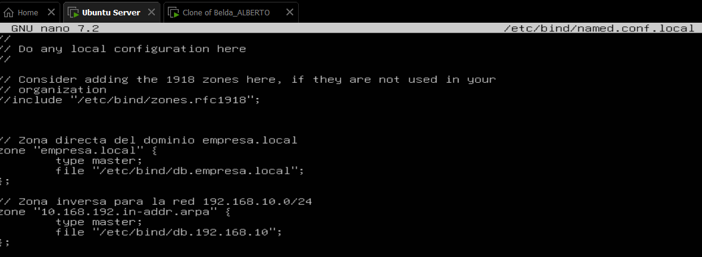
💡 Nota técnica: en la zona inversa los tres primeros octetos de la red
se escriben invertidos (10.168.192.in-addr.arpa ↔ 192.168.10.0).
1.6.4. Zona directa — /etc/bind/db.empresa.local
$TTL 604800
@ IN SOA ns1.empresa.local. admin.empresa.local. (
2026042101 ; Serial (formato YYYYMMDDNN)
604800 ; Refresh
86400 ; Retry
2419200 ; Expire
604800 ) ; Negative Cache TTL
;
@ IN NS ns1.empresa.local.
ns1 IN A 192.168.10.2
www IN A 192.168.10.10
nas IN A 192.168.10.20
intranet IN CNAME www.empresa.local.
Validación de sintaxis:
sudo named-checkzone empresa.local /etc/bind/db.empresa.local
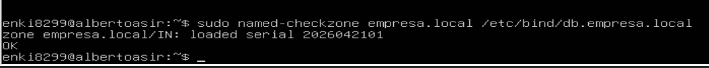
1.6.5. Zona inversa — /etc/bind/db.192.168.10
$TTL 604800
@ IN SOA ns1.empresa.local. admin.empresa.local. (
2026042101 ; Serial
604800 ; Refresh
86400 ; Retry
2419200 ; Expire
604800 ) ; Negative Cache TTL
;
@ IN NS ns1.empresa.local.
2 IN PTR ns1.empresa.local.
10 IN PTR www.empresa.local.
20 IN PTR nas.empresa.local.
Los números 2, 10 y 20 corresponden al último octeto de cada IP
de la red.
Validación:
sudo named-checkzone 10.168.192.in-addr.arpa /etc/bind/db.192.168.10
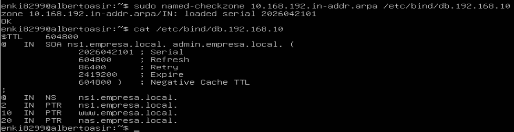
1.6.6. Arranque del servicio DNS
sudo systemctl restart named
sudo systemctl status named
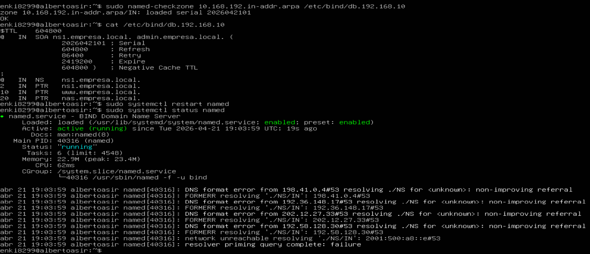
1.7. Matriz de Registros DNS Configurados
| Nombre | Tipo | Destino | Servicio asociado |
|---|---|---|---|
ns1.empresa.local |
A | 192.168.10.2 |
Servidor DNS |
www.empresa.local |
A | 192.168.10.10 |
Servidor Web (Samuel) |
nas.empresa.local |
A | 192.168.10.20 |
Servidor NAS (Jacob) |
intranet.empresa.local |
CNAME | → www.empresa.local |
Alias del portal web |
192.168.10.2 |
PTR | ns1.empresa.local |
Resolución inversa |
192.168.10.10 |
PTR | www.empresa.local |
Resolución inversa |
192.168.10.20 |
PTR | nas.empresa.local |
Resolución inversa |
1.8. Pruebas de Funcionamiento End-to-End
1.8.1. Resolución directa (nombre → IP)
dig @192.168.10.2 www.empresa.local
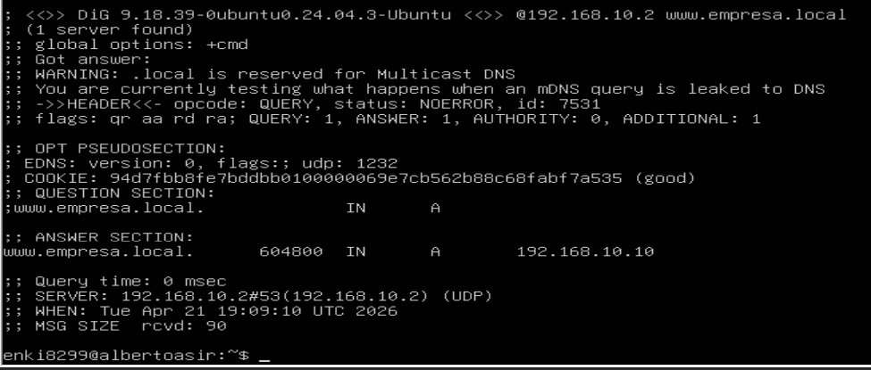
En la sección ANSWER SECTION se obtiene:
www.empresa.local. 604800 IN A 192.168.10.10
Indicadores de éxito:
status: NOERROR: consulta procesada sin errores.- Flag
aa(authoritative answer): el servidor responde como autoritativo de la zona. SERVER: 192.168.10.2#53: la respuesta procede del servidor configurado.
1.8.2. Resolución inversa (IP → nombre)
dig @192.168.10.2 -x 192.168.10.10
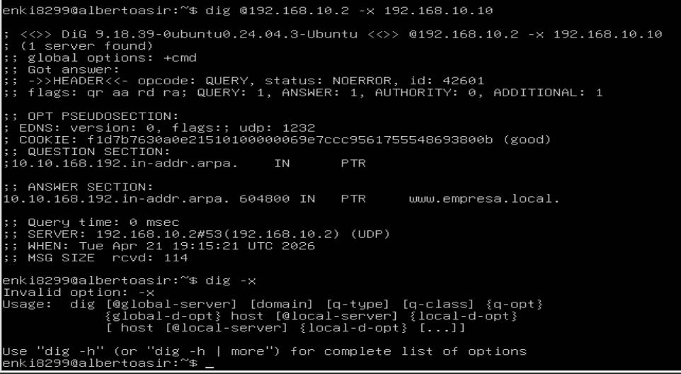
Respuesta:
10.10.168.192.in-addr.arpa. 604800 IN PTR www.empresa.local.
Esto confirma el funcionamiento bidireccional del DNS, necesario para análisis de logs, diagnóstico de red y auditoría de seguridad.
1.9. Integración DHCP ↔ DNS
El valor diferencial de esta arquitectura reside en la integración entre ambos servicios, que se produce en cuatro pasos transparentes para el usuario final:
- Un dispositivo se conecta a la red
RedEmpresa. - El servidor DHCP le asigna automáticamente una IP del rango
dinámico
192.168.10.100 – 192.168.10.200. - Dentro del mismo lease, el DHCP le entrega como servidor DNS la IP
192.168.10.2(el propio BIND9). - Al consultar
www.empresa.local, el cliente recibe192.168.10.10y accede directamente al servidor web.
💡 Consecuencia práctica: conectarse a la red equivale a disponer de acceso completo a los servicios internos por nombre, sin intervención manual.
1.10. Perfil de Administración y Permisos
La administración de estos servicios está restringida al usuario
admin-red, siguiendo el principio de mínimo privilegio.
Permisos asignados:
- Reinicio controlado de
isc-dhcp-serverybind9. - Edición de
/etc/dhcp/dhcpd.conf,/etc/bind/*y/etc/netplan/*.
Restricciones explícitas:
- Sin acceso a Apache (Samuel), NAS (Jacob) ni políticas de firewall (Blai).
- Sin permisos para la creación o gestión de usuarios del sistema.
Consultar el apartado Gestión de Usuarios del portal para la matriz completa de permisos del proyecto.
1.11. Resumen Ejecutivo del Módulo
| Entregable | Estado |
|---|---|
Servidor con IP fija 192.168.10.2 |
✅ |
DHCP repartiendo IPs del rango .100 – .200 |
✅ |
| Cliente real (Lubuntu) obteniendo IP automáticamente | ✅ |
| Registro de leases operativo | ✅ |
| BIND9 instalado y en ejecución | ✅ |
Zona directa empresa.local validada (OK) |
✅ |
Zona inversa 10.168.192.in-addr.arpa validada (OK) |
✅ |
| Resolución directa (nombre → IP) funcional | ✅ |
| Resolución inversa (IP → nombre) funcional | ✅ |
| Integración DHCP ↔ DNS operativa | ✅ |
1.12. Referencias Técnicas
- Documentación oficial BIND9 — https://bind9.readthedocs.io/
- Guía de zonas inversas (APNIC) — https://www.apnic.net/about-apnic/corporate-documents/documents/resource-guidelines/reverse-zones/
- Configuración BIND9 en Ubuntu 24.04 — https://kifarunix.com/how-to-setup-bind-dns-server-on-ubuntu-24-04/
- Netplan — configuración de red en Ubuntu — https://netplan.io/reference
- ISC DHCP Server — https://www.isc.org/dhcp/
Última actualización: Abril 2026 · Módulo mantenido por el Administrador de Red (admin-red).